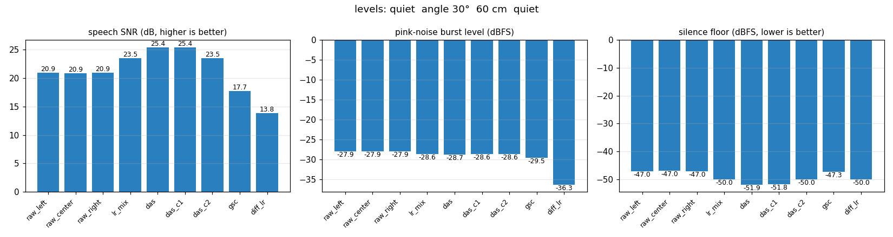
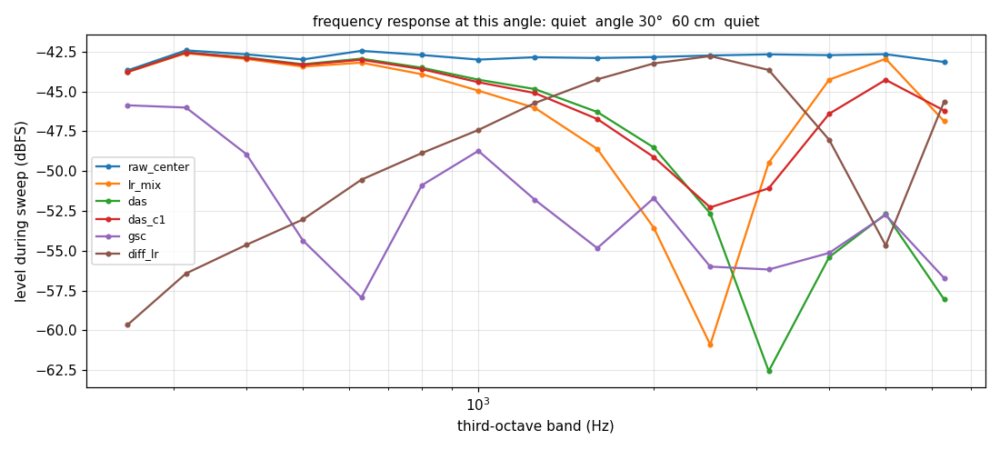
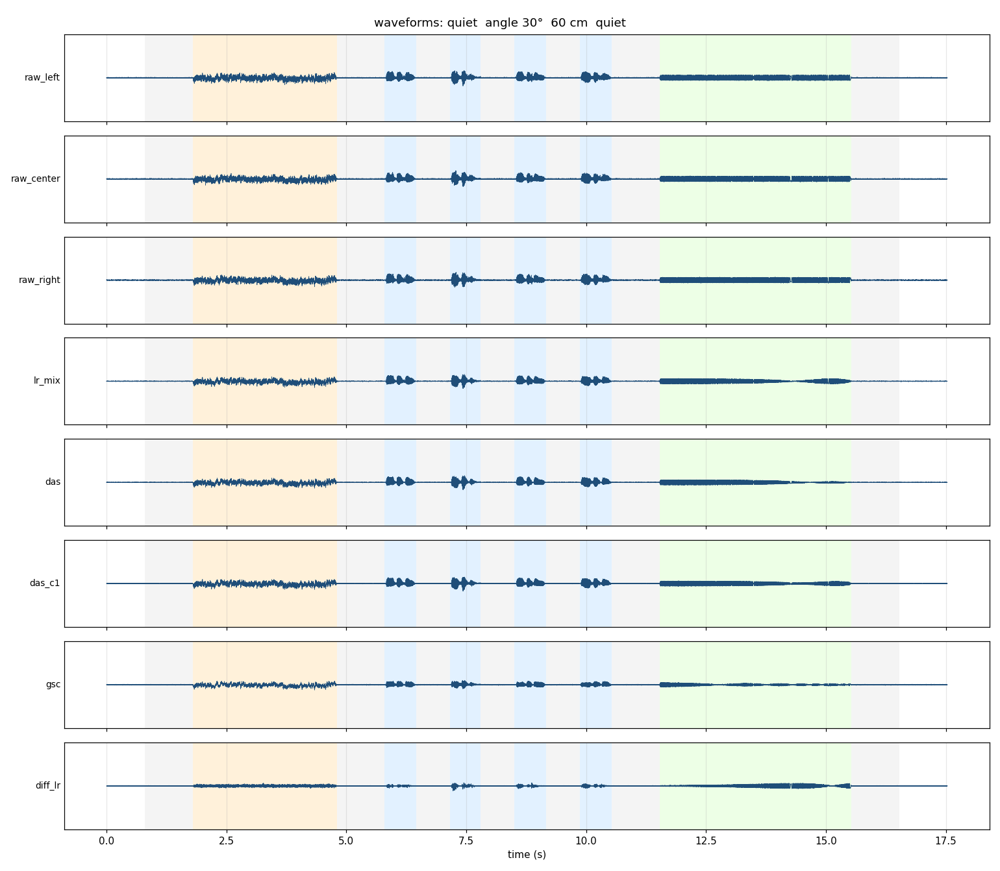
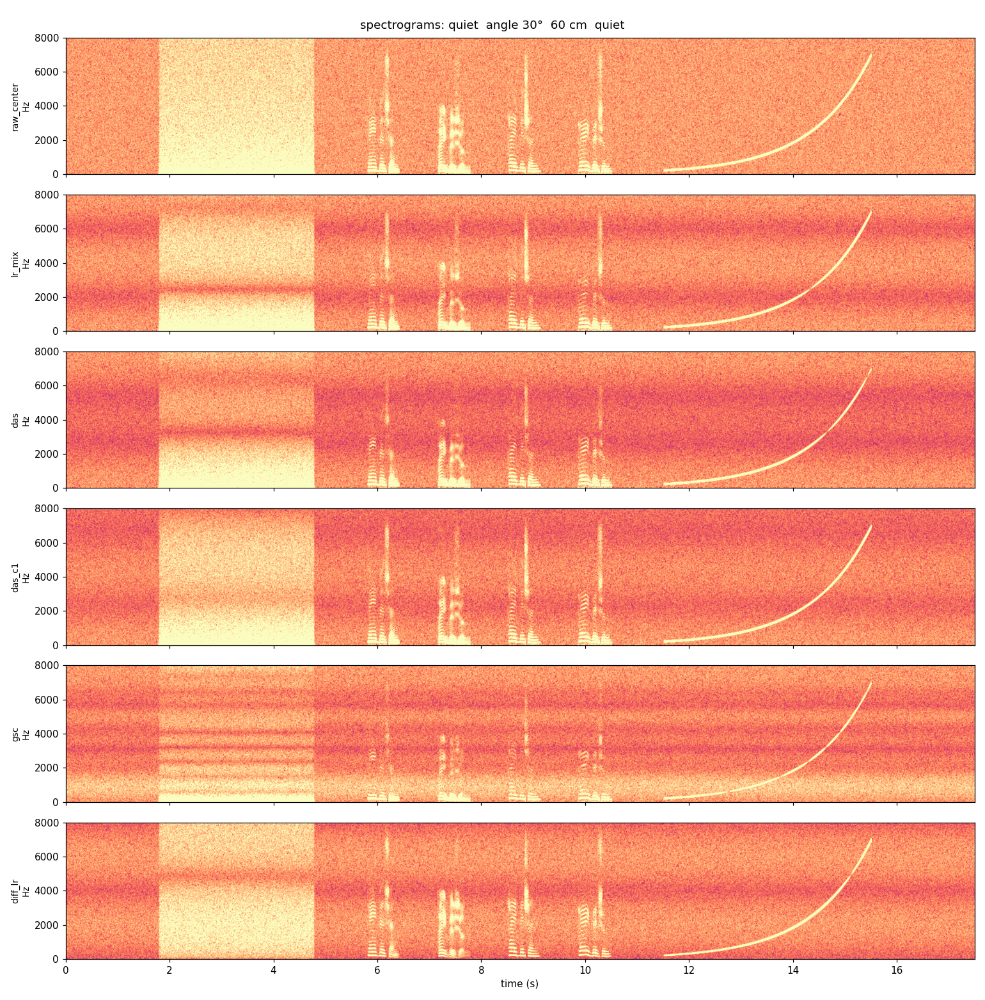

angle 30°, 60 cm, quiet, 17.53 s. Clip offset 0.8 s (confidence 0.945).
Microphones hear the source at +30° (L-R delay 3.25 samples, peak 11.4).
| path | rms_dbfs | speech_snr_db | noise_level_dbfs | silence_floor_dbfs | peak | clips |
|---|---|---|---|---|---|---|
| raw_left | -30.47 | 20.89 | -27.91 | -47.0 | 6203 | 0 |
| raw_center | -30.46 | 20.88 | -27.91 | -46.99 | 6263 | 0 |
| raw_right | -30.47 | 20.89 | -27.91 | -47.01 | 6190 | 0 |
| lr_mix | -31.61 | 23.5 | -28.6 | -50.01 | 5632 | 0 |
| das | -31.84 | 25.43 | -28.73 | -51.89 | 5773 | 0 |
| das_c1 | -31.57 | 25.39 | -28.58 | -51.82 | 5753 | 0 |
| das_c2 | -31.56 | 23.48 | -28.57 | -49.98 | 5696 | 0 |
| diff_lr | -36.83 | 13.82 | -36.27 | -50.05 | 3934 | 0 |
| gsc | -34.24 | 17.74 | -29.51 | -47.33 | 4029 | 0 |



